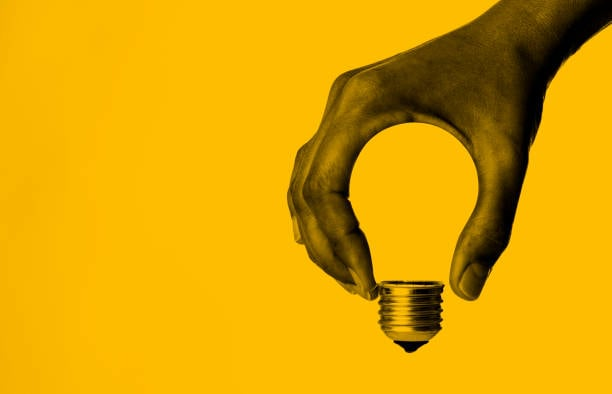

Nadahnuće ili inspiracija je, u psihologiji, faza u toku stvaralačkog mišljenja, u kojoj se do rešenja dolazi iznenada. Tada se neočekivano ukazuje celo rešenje do tada nerešivog problema. Naziva se još i uviđanje ili iluminacija.
Kao emocionalni koncept, ovo je stanje tipično obilježje i sastavni element kreativne aktivnosti. Često se doživljava kao fenomen koji postoji odvojeno od svog nositelja, koji mu dolazi izvana. Kao dar viših sila, njegova jedinstvenost objašnjava rijetkost i kratkotrajnost nadahnuća koja nije dostupna običnom smrtniku, osim nekolicine odabranih.
Osnova nastanka ovog stanja je dominantni fokus uzbuđenja u moždanoj kori, koji potiskuje druge aktivne centre. Žarišta uzbuđenja posljedica su kao reakcija na vanjske podražaje. Najčešće postoji nekoliko takvih žarišta, jer osoba opaža mnogo različitih predmeta.
